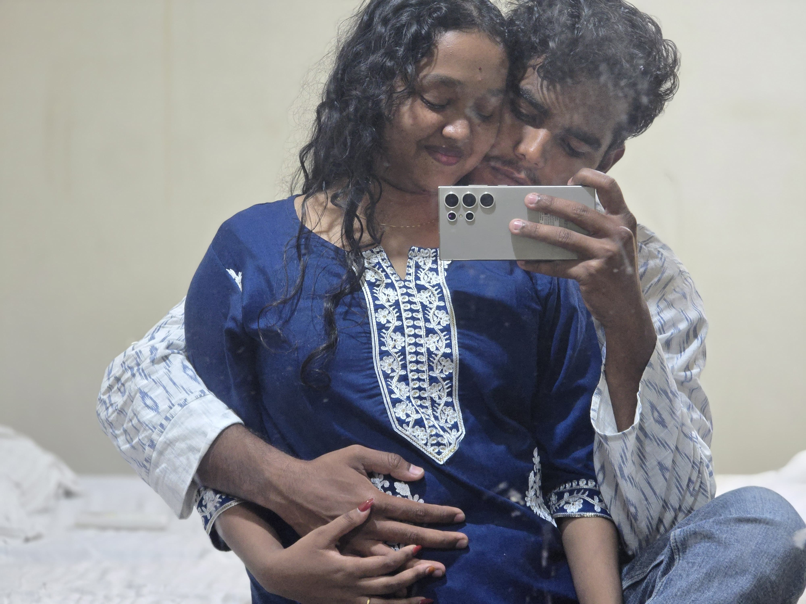
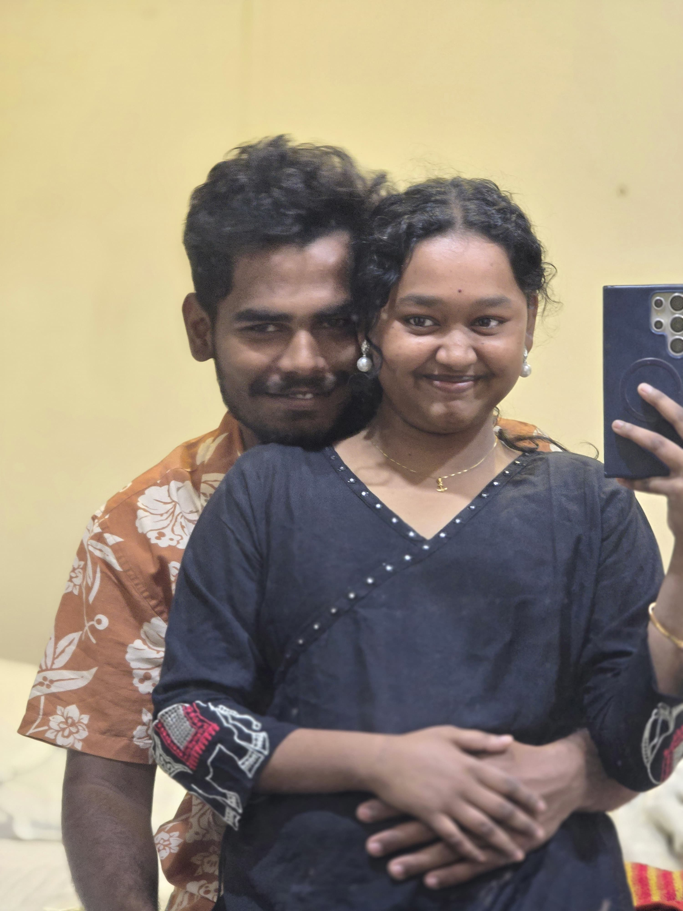
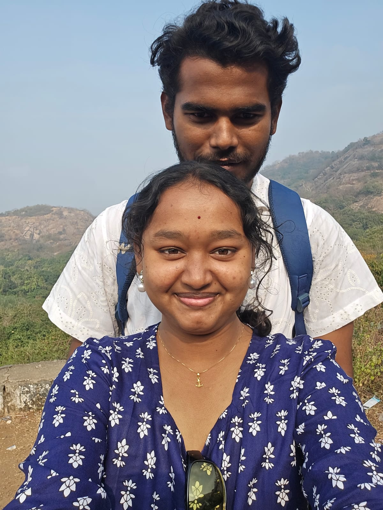
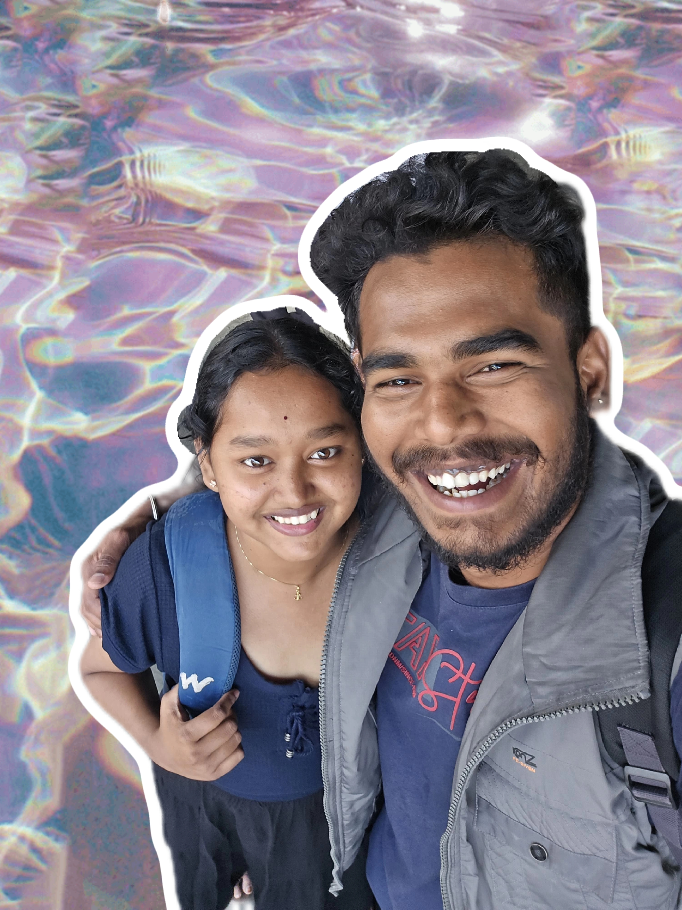
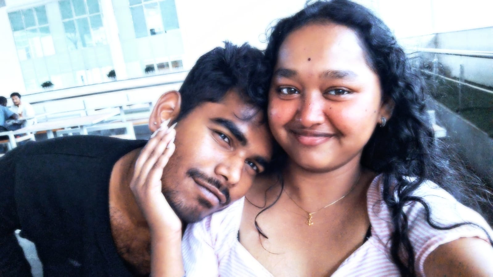
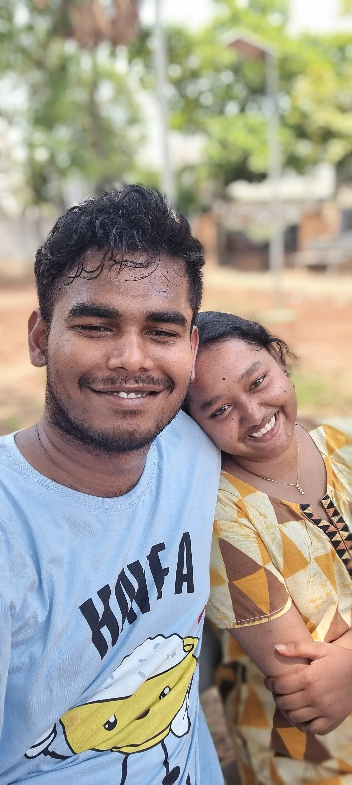
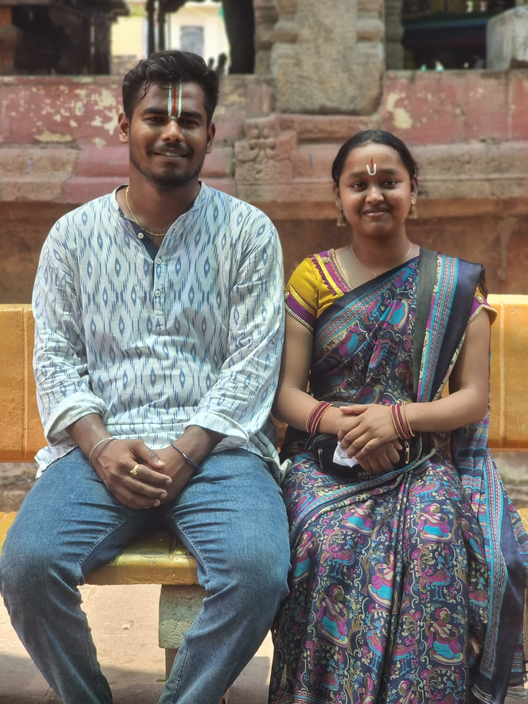
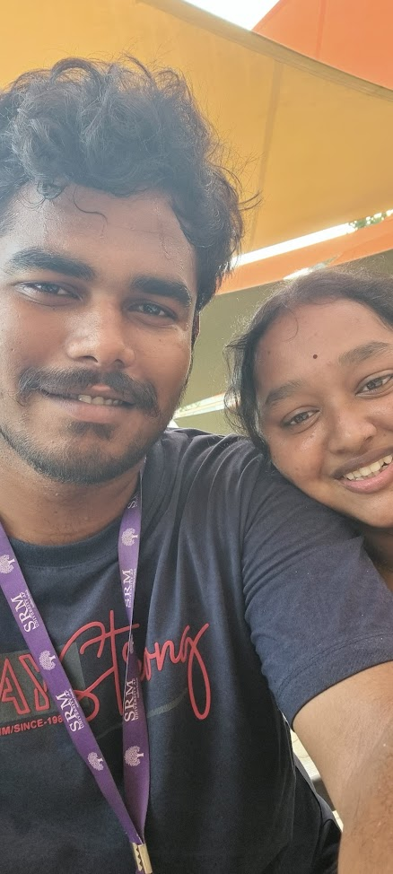
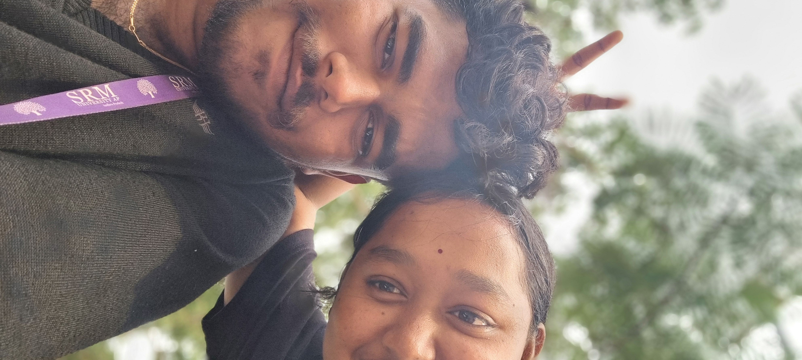

Our Chapters

"Where it all began. That first spark that changed everything."
I wasn’t sure about us.
I wasn’t sure if we would meet again.
I wasn’t sure if what we felt was real.
I wasn’t sure if those tears meant something.
I wasn’t sure if the fear of losing each other was true.
I wasn’t sure if our bodies fit,
or if our eyes were telling the truth.
I wasn’t sure if waves and curls could belong together.
I wasn’t sure if twinning was needed,
or if being different was enough.
I wasn’t sure of the paths we came from,
or the paths we might walk together.
I wasn’t sure we would see each other that day.
I wasn’t sure we could be your bubbly.
I wasn’t sure if silence meant comfort
or if distance meant goodbye.
I wasn’t sure if this was love,
or just the beginning of learning how to feel.
But in all that not knowing,
I kept choosing to stay a little longer,
and maybe that was the truest thing I knew.

"Two days weren't enough. Every second spent with you felt like a dream I didn't want to wake up from."
There is happiness in seeing you waiting for me.
There is happiness in hugging you, forgetting the world around us.
There is happiness in hearing you say, “I am in love with you.”
There is happiness when you open up and I learn your past.
There is happiness in going home, with my home dropping me there.
There is happiness in you staying another day for me.
There is happiness in sleeping with your fragrance on me,
knowing I can see you again tomorrow.
There is happiness in seeing you in formals
and falling for you all over again.
There is happiness in wearing jhumkas you got for me.
There is happiness in wearing kumkum from your hands.
There is happiness in eating laddoo from your hands.
There is happiness in walking hand in hand,
in playing on the swing with you.
There is happiness in getting tense about families,
and even when the train gets cancelled.
There is happiness in a single reel,
and in sharing a dosa.
There is happiness in small moments,
even when we are unsure what to call this.
There is happiness in not knowing the future,
but still choosing each other today.
There is happiness in loving slowly,
without promises, without certainty.
But there is no happiness in saying goodbye.
There is no happiness in letting go of your hand.
There is no happiness in the call after we leave.
Yet, there is happiness with no reason to explain
because we know this time,
we will meet again.
You are my happy place,
and that is why I call you home.

"Starting the new year by your side. You're the only resolution I want to keep."
Not new, not old.
The light on our faces when we see each other.
Not new, not old, going on bike rides..
but with you, I can still feel you.
Not new, not old, the mountain view
and playing with tralala, hahaha.
Not new, not old..
jhumkas, kadi,
your hands choosing them for me,
my heart keeping them forever.
Not new, not old..
Kondapalli roads,
dosa shared,
time slowing down just enough.
Not new, not old.. me trying to capture you,
failing at photographs, succeeding at remembering.
Not new, not old, buying water at double the price.
Not new, not old, getting blessings from them,
which came in the form of a song..
and you didn’t even know.
Not new, not old.. you in Vijayawada,
me away from you,
the distance suddenly heavy.
Not new, not old.. taking my home to our home,
you speaking to your mother outside my house,
like you already belong.
Not new, not old, finding my way till A-1
just to walk into naked you.
Not new, not old.. paneer rice, shared drinks,
my first and last cigarette,
moments we don’t know we repeat, but won’t forget.
Not new, not old, going to the station together,
tripping on the escalator.. only for you to have my back.
Not new, not old.. watching you moving away,
me walking faster, waving higher,
hurting just to stay seen.
Not new, not old.. tears waiting behind my eyes
while your camera keeps rolling.
Not new, not old.. the space you leave behind,
still shaped like you.
Not new, not old.. every road way back home is you.
Not new, not old.. the same heavy call,
words careful, hearts unsure.
Not new, not old.. not calling it love,
not walking away either.
Just hope,
quiet and stubborn,
believing we are still choosing each other.

"Just yesterday, and yet I already miss the way you look at me. Tomorrow is ours."
Despite the lie, we met.
Despite the misunderstanding, we stayed.
Despite the ego, our hearts stayed open.
Despite the arguments, we breathed.
Despite the breaking, we did not leave.
Despite the words that hurt, there were hands that healed.
Despite the silence, we learned how to speak.
Despite you understanding my dress isn’t the problem
and not asking me to wear it,
yet coming up with ideas to make me comfortable.
Despite tolerating my moods,
Despite thinking about not hurting my feelings,
Despite your hands adjusting my hair..
the purest form of love I have ever known.
Despite wearing black pants even though you’re uncomfortable
just for a few minutes of my joy.
Despite saying, “I don’t show feelings,”
I see care in every move you make.
Despite doing so much for me,
here I am—useless and worrying you.
Despite the scratches,
loving while fixing what we almost lost.
Staying. Fixing. Learning each other.
I mean, the cracks do let the light in, Adi.
Fourth meets aren’t soft... they’re honest.
Despite still not wanting to let go of your handshake,
yet waving high again.
Despite tears,
I saw something else this time..
the peace of knowing we’re not leaving each other.
Despite not knowing if this is love,
our smiles grew brighter with each meet says the pictures.
And maybe that is enough.

"Bestest Fest with my Best."
We met like we always do
at A1,
food between us,
laughter slipping into alcohol,
and sleep held us
before the world could.
time chased us at four,
I held worry in my hands,
you held the hem of my dress in your eyes
care, in your own quiet way.
we held conversations of old men,
grandfathers and their unfinished lives,
while something unnamed
held its place beside us.
you lit up at satsung
like a child held by something sacred,
and I think that’s when
I first felt it
how gently I was being held.
my world held you,
and faltered
friends, noise, that unbearable DJ,
the waiting, the crowd
I almost lost what we held.
but we still held each other.
you pushed the world away (and a girl behind me, too),
we held laughter over a “120mm dosa,”
and I held that moment
watching you eat
like it was the softest thing I’d ever known.
night came quietly
a bus, a shoulder,
you held onto me
as if I was enough.
I am small,
but that night
I still held you.
dreams hold like that,
I thought
but this wasn’t something imagined,
this was real,
this was held.
morning held your words
“acchi dikh rhi ho”
and suddenly,
I held confidence
like it belonged to me.
lemon soda promises we held,
roads that held our memories
Kondapalli passing by
like a quiet reminder
of something we never named,
but always held.
you walked slow,
yet held time differently
reaching before me,
like you always do,
in ways I don’t understand.
we held nothing right
forgot bandages,
but still held laughter,
shared chips,
shared silence,
and I held onto you
in a room full of noise.
and that was enough to be held.
you slept through pieces of us,
and I held the rest
maybe that’s how we were
held that day
uneven, imperfect,
but still.
we held foolish moments at lunch,
ate momos like it mattered,
and your hands
your hands
they held everything softer.
you held me from breaking,
told me not to cry,
and for once,
I didn’t need to be anything
but held.
night fell again
we held quiet walks,
campus breathing around us,
and somewhere between steps
I realized
even this chaos
was held.
this wasn’t perfect,
this wasn’t planned,
this wasn’t easy
but it was still
held.
in every almost-missed moment,
in every laugh that came late,
in every silence that stayed
we were
held.
and when I left you
at the station,
with my world beside me,
I held that goodbye
longer than I should have.
because some things
don’t need to go right
to be real
they just need to be
held.

"Chaos and Peace"
to be written...

"Seventh Meet will always be Special"
18th May
Waiting at the chaigpt, without coming any closer…
a strange, quiet intimacy held only in our eyes
not smiling, not shy, not angry…
just a steady, unspoken happiness
resting in that rude, manly gaze of yours.
Leaning back and watching you,
it’s funny how my entire world narrows down to just you,
even when I had the perfect window seat beside me.
I bought my entire outfit… but not bangles,
because somewhere, I already knew you would bring them.
“I bought them so they’d match your dress.”
…that kind of thought, that’s intimacy.
And of course… not forgetting the earrings count, hehe.
The way you backed me up in front of my friend,
so casually saying,
“she doesn’t know, she’s never done that,”
like a father instinctively stepping in for his child…
it stayed with me.
Giving me your dragon fruit accessory
just because I once said it was cute,
slowing your steps to match my heels,
stopping me from plucking a flower
only so you could be the one to give it to me…
soft things, in the most unexpected ways.
19th May
That sudden urge to talk to my brother,
and then teasing me right in front of him…
such a man thing,
and yet somehow, so endearing. You guys are cutiess <3
Waiting so patiently while I got ready,
watching me in a saree like I was something new,
filming me, teasing me, pulling at it when I said it sticks…
exactly the way I secretly wanted.
The temple felt… peaceful. Sacred, even (our naamalu).
I don’t know what you prayed for,
but I think you knew exactly what I did.
Waking you up is honestly a task that takes forever…
and yet, the way you act when you’re drunk,
those careless, playful moments,
and you falling asleep leaning on me
it makes me feel like I’m holding something fragile,
like a mother with her child.
And when I think about you carrying everything,
all the effort you put in just to meet me…
I don’t say it enough,
but I feel it, deeply.
20th May
All that careful planning for bus details… wasted.
But,
thanks to Chaigpt uncle and his endless curiosity.
The games we played in the library…
I won’t lie, I didn’t like the ending much,
and that casual 11:11 sign
way too effortless you have shown, Adi Bangaru.
That quiet jealousy…
asking me to sit after the other girl
just so I wouldn’t end up next to that guy…
there’s something about that, muahhh.
You noticed my silence,
and without asking too much,
you tried to lift it
playing *Galipata*, knowing I love it.
Ganesha waited, loved, persisted…
and Sowmya said yes.
Maybe love really is just… continuing to show up.
Wrapped in those sheets, in your arms,
I felt a kind of peace
that doesn’t need words to exist.
And when you shielded my face and feet
from the harsh heat with your own body…
that’s when I knew
your actions will always speak louder than anything you say.
Because it’s rare…
to find a man who is caring, gentle, thoughtful,
and still so effortlessly attractive
yes, even with those unreal, perfectly shaped booty buns of yours.
I tried so hard not to cry
from the moment we had pizza…
I distracted myself with random conversations,
food, travel, anything…
just to delay the inevitable.
But when it finally came
that moment of goodbye
I couldn’t hold it in anymore.
My vision blurred,
tears flooding faster than I could stop them,
yet all I wanted
was to see you clearly… one last time
before you disappeared.
Maybe that’s why
the greatest love stories are always long distance…
because they survive in longing,
in waiting,
And maybe…
that’s exactly what we are.

"The Real Feelings"
15th June
I love it when the little kid inside you gets excited and starts doing those tiny dance moves in front of me.
I genuinely thought you'd never come again. I had already lost all hope, yet somehow my heart still waited for you... and there you were, asking me to move my bag and sit closer to you on the bus.
I still feel stupid for ignoring you, but I was so scared that I couldn't even open my mouth to defend myself.
I literally threw my phone at you, yet you still came after me. In that moment, I realized exactly who I had fallen in love with.
I still remember how casually you picked up my juice bottle, as if you already knew I wasn't going to drink it. It was such a small thing, but it made me feel... known. Known by you.
I begged you not to go to the station, forgetting that you'd never leave me outside the campus on my own.
When I said I'd come with you to buy the drinks, you smiled and said, *"Aaja, tera toh hone de aaj."* But what you don't realize is that the love you have for me would never actually let you do that.
At Golden, I poured my heart out. Every little thing I had been feeling, every thought I had been carrying... I told you everything. And then you looked at me and said the most beautiful words...
"Main tujhe nahi chhod raha hoon."
I always tell you not to create too many memories because goodbyes hurt... but when you quietly opened your camera and recorded our ride in the back of the auto, I couldn't help but smile. I cherished that moment more than you know.
After such a long day, resting my head on your shoulder and falling asleep felt like the safest place in the world.
16th June
I even made halwa, thinking you'd like it and enjoy eating it.
And when I jokingly complained that you didn't bring
me earrings this time, I never expected what would happen next.
The very next day, you showed up with Mallipoolu.
They reminded me of the song "nee mudida mallige" song.
It wasn't just the flowers, it was the thought behind them,
the fact that you remembered, the fact that you cared.
That moment became so special to me
that even now, I can't quite put it into words.
Some feelings are just too beautiful to explain.
All I know is that no gesture has ever felt that personal,
that thoughtful, or that precious to me.
The day you sang for me.
I don't think anyone could have been happier than I was.
You held me so tightly in the auto that I forgot I even needed to move.
And then there you were, telling me stories while eating noodles with Kurkure... like a little kid excitedly telling his mom about his day after coming home from school. It was the cutest thing ever.
And when you handed me your bag without even thinking... it made me realize how true it all was. It felt so natural, like I already belonged beside you.
Then came the hardest part...
Goodbye.
It always is.
But then, even after your ride had already started, you came all the way back just to kiss me and say goodbye properly.
In that moment, I truly felt like the luckiest girl in the world.
You're such a beautiful soul, Adi.
And I'll always be grateful for you.

"Direct or Service?"
I never knew something as simple as making aloo parathas for you could bring me so much peace. Watching you eat them and hearing you say they tasted good... that tiny little compliment made me giggle on the inside for the rest of the day. The bus got so crowded that we had no choice but to sit even closer, our arms wrapped around each other without even realizing it. You were telling me the story of the family that owns the shop, and before I knew it, we had already reached college. Your usual funny back slap... The wind was so strong that my hair was an absolute mess, and there we were, talking about castes, relatives, and every random thing that came to our minds. Our washroom breaks... And you? Walking like a bullet train while I tried to keep up. Golden gave us golden moments. But I still feel a little guilty about how I behaved that day. Singing songs together with you... That's a core memory I'll always carry with me. Then came the second day... And as always, we went straight to the direct auto. Me asking about other girls... a never ending habit of mine. And I genuinely thought platinum was more expensive than gold. I was sooo hungry, and even though we barely had any money, you still somehow made sure I ate. You'll probably never know how much that meant to me. Sleeping next to you is still one of the safest, most comforting feelings I've ever known. Our favorite classic pizza, and me feeding you only for us to get caught by the driver uncle every single time. You were so brave while trying to exchange digital money for cash, yet you kept looking back at me even though he was literally listening. It was like watching a toddler who's too scared to ask on their own and keeps looking at their father for help. And those walks... the conversations we had while sitting near the buses... they felt like heaven. It was exactly what I needed the most. Unlike last time, you stayed with me until my stop, even though it meant you had to travel farther just for me. And I still don't know why I suddenly had the urge to go to the washroom... Because if I hadn't, we would've gotten to spend a little more time together. In the end... That simple handshake was all we needed to say the most painful goodbye. Holding on for as long as we possibly could before letting go.